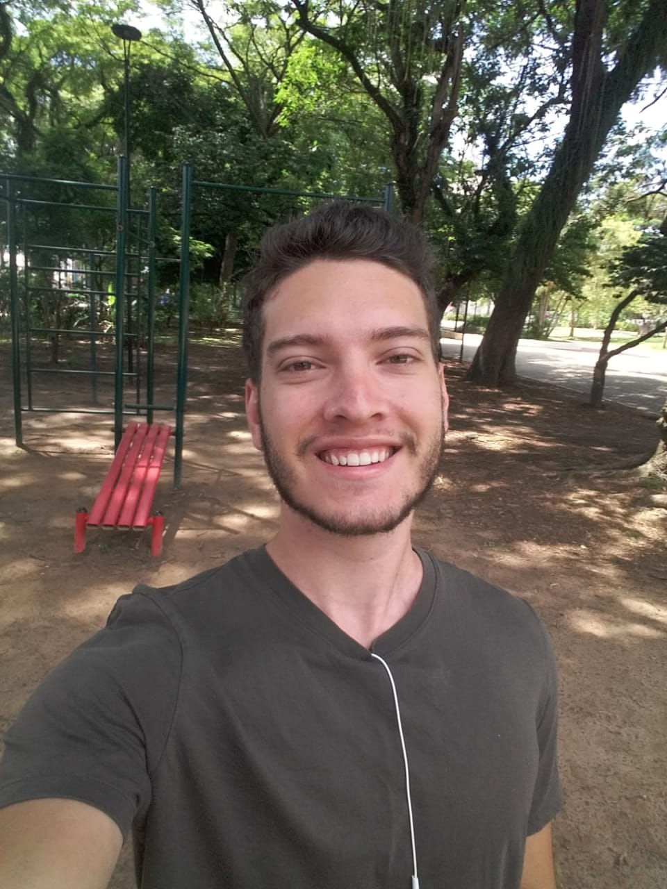

Olá! Eu sou Bruno Bartolomeu
Desenvolvedor Web
Sou um desenvolvedor web de Taubaté, São Paulo. Eu me apaixonei por codificação, quebrar problemas complexos em outros mais simples transformando-o em UI é genial. Eu também amo a lógica de programação, resolver um problema com código eficaz e bem estruturado. Comecei a programar pois achava que era uma área promissora, mas continuei porque gostei de resolver problemas com código. Eu iniciei minha jornada de programação no inicio de 2021.